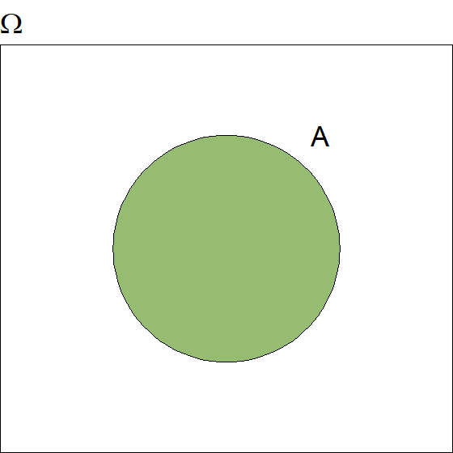
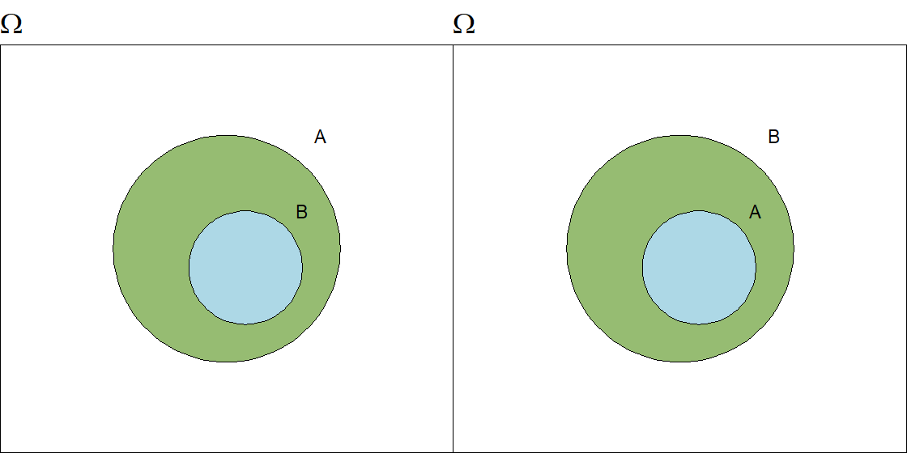
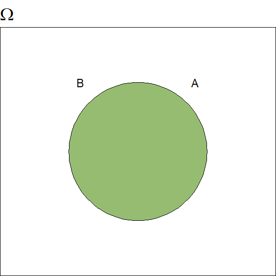
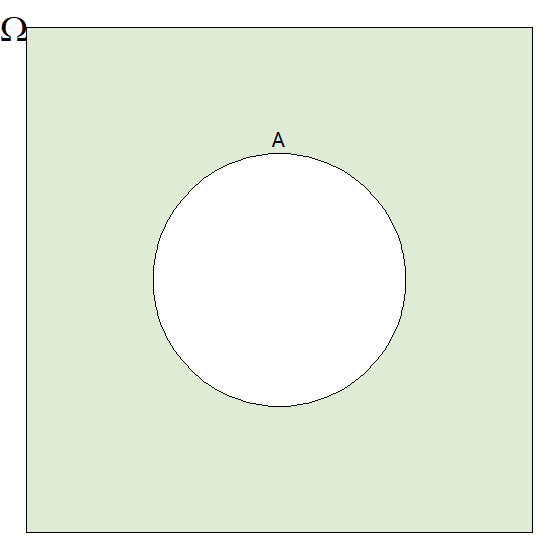
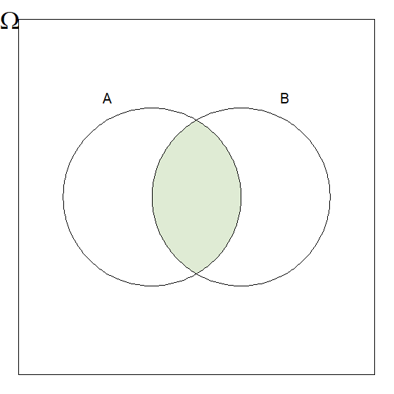
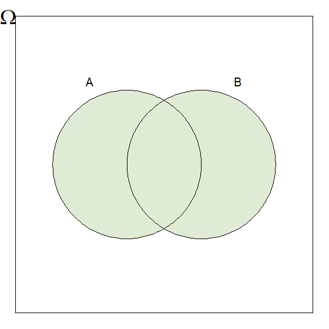
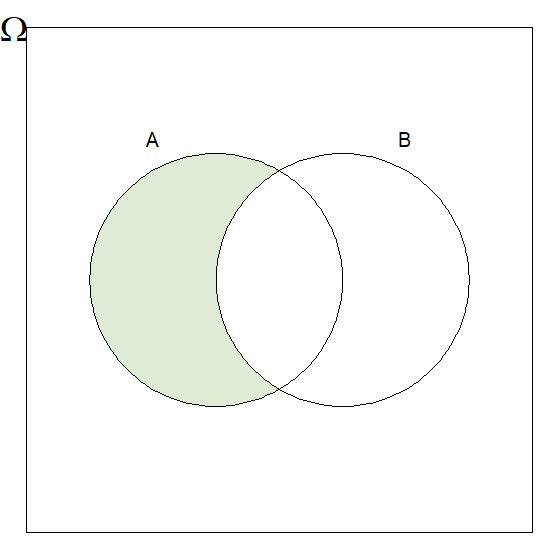

Para calcular las probabilidades de varios eventos es necesario contar el número de resultados posibles de un experimento, o contar el número de resultados favorables en un evento dado. el proceso de conteo puede simplificarse mediante el empleo de dos técnicas de conteo denominadas Permutaciones y combinaciones.
Si un suceso \(A\) puede ocurrir de \(n\) maneras y otro suceso \(B\) puede ocurrir de \(m\) maneras, entonces el suceso \(A\) o el \(B\) (sucede el evento \(A\) o sucede el evento \(B\)) pueden ocurrir de \(n + m\) formas, siempre y cuando los eventos no puedan suceder simultáneamente. En los problemas de conteo, el conector “o” se traduce en suma.
\[\sum_{i=1}^k n_i\]
Ejemplo
Cinco empresas de transporte terrestre tienen servicio diario entre Medellín y Bogotá. Tres empresas de aviación tienen vuelo diario entre Medellín y Bogotá. En consecuencia, hay \(5 + 3 = 8\) maneras de ir de Medellín a Bogotá por aire o por tierra.
Ejemplo
En el lanzamiento de un dado, ¿de cuántas maneras se puede obtener un número inferior a 2 o mayor que 4?
A: número inferior a 2, sucede solo de una manera.
B: número superior a 4, sucede de dos maneras.
A o B: número inferior a 2 o superior a 4, sucede de 1 + 2 = 3 maneras.
Si un suceso \(A\) puede ocurrir de \(n\) maneras y un suceso \(B\) de \(m\) formas, entonces el suceso \(A\) y \(B\) (sucede el evento \(A\) y sucede el evento \(B\)) puede ocurrir de \(n*m\) modos. En los problemas de conteo, el conector “y” se traduce en multiplicación.
\[\prod_{i=1}^k n_i\]
Ejemplo
El menú de un restaurante ofrece 3 platos calientes y 4 postres. ¿De cuántas maneras se puede elegir un almuerzo de 1 plato caliente y 1 postre?
Podríamos hacer una lista de todas las posibilidades, pero será mucho más cómodo aplicar el principio de la multiplicación: hay 3 maneras de elegir el plato caliente y para cada una de ellas hay 4 maneras de elegir el postre. Por lo tanto, hay \(3 \times 4 = 12\) comidas posibles.
Ejemplo
¿Cuántos códigos de una letra y un número de un dígito se pueden formar con las 27 letras del alfabeto y los números del 0 al 9?
Uno de los métodos podría ser listar todas las posibilidades \(A0\), \(A1\) … \(A9\); \(B0\), \(B1\) … \(B9\) … \(Z0\), \(Z1\) … \(Z9\) hasta obtener 27 filas de 10 códigos en cada una.
Es más simple utilizar el principio de la multiplicación: hay 27 maneras de elegir la letra y para cada una de ellas hay 10 maneras de elegir el número, de modo que son \(27 \times 10 = 270\) maneras en total.
Si una librería vende libros de literatura, biología, medicina, arquitectura y química, de los cuales posee 15 tipos diferentes de libros de literatura, 25 de biología, 12 de medicina, 8 de arquitectura y 10 de química, ¿cuántas opciones tiene una persona para escoger un libro de arquitectura o un libro de biología?
¿Cuántos resultados se pueden obtener si se lanza un dado 2 veces?
¿De cuántas formas se puede cruzar un río, sabiendo que se dispone de 3 botes y 4 barcos?
¿Cuántos resultados distintos se puede obtener si se lanza una moneda 3 veces? ¿Y si se lanza 5 veces?
Un repuesto de automóvil se vende en 3 tiendas de Medellín y en 8 tiendas de Bogotá. ¿De cuántas formas se puede adquirir el repuesto?
Una persona quiere comprar un par de zapatos. Cuando llega a la zapatería encuentra solamente dos modelos diferentes de su talla de calzado. De uno hay dos colores disponibles, y del otro cinco colores disponibles. ¿Cuántas maneras tiene esta persona de realizar esta compra?
¿De cuántas formas se puede ordenar una pizza, si hay 2 opciones de masa (tradicional y especial), y 4 sabores (hawaiana, carne, vegetariana y americana)? Solo se puede pedir una masa y un sabor.
De la ciudad A a la ciudad B, se puede ir mediante 2 buses o 3 trenes. De la ciudad B a la ciudad C se puede ir mediante 2 barcos, 2 trenes o 3 aviones. ¿De cuántas formas se puede ir de la ciudad A a la ciudad C, pasando por B?
¿Cuántos números del 1 al 1000, no contienen la cifra 4?
Los números telefónicos de la ciudad de Medellín son de ocho dígitos, de los cuales el primero tiene que ser 4 y el segundo no puede ser 0, 1 ni 7. ¿Cuántos números telefónicos diferentes se pueden formar?
Muestreo con reemplazo: es el procedimiento de observar una unidad dentro de una población y retornarla al mismo conjunto. Entonces para \(m\) muestras de \(n\) objetos existen \(n^m\) opciones de seleccionar una muestra.
Muestreo sin reemplazo: es el procedimiento de observar una unidad dentro de una población y extraerla del conjunto. Para seleccionar una muestra, es preciso preguntar ¿importa el orden?
Se quiere seleccionar \(r\) elementos de un conjunto de \(n\) objetos, cuando importa el orden de selección.
Consideremos un conjunto de tres libros diferentes: física, química y matemáticas. El número de formas en que pueden ubicarse en una estantería es una permutación de tres elementos, tomados de a tres. Representemos cada uno por su letra inicial. \[\{F,\,Q,\,M\}\] Las permutaciones posibles para el conjunto dado son: \[\begin{align*} FQM &\quad QMF \quad MFQ \\ FMQ &\quad QFM \quad MQF \end{align*}\] Es decir, que los libros se pueden ordenar de 6 maneras diferentes. Para calcular el número de permutaciones para estos tres elementos, sin hacer una representación de cada caso, podemos usar el principio multiplicativo.
Hay \(n_1 = 3\) maneras de escoger el primer libro que se va a ubicar en el estante. Una vez escogido este, quedan \(n_2 = 2\) opciones para la segunda posición y de forma análoga \(n_3 = 1\) maneras de escoger el último elemento. La cantidad de permutaciones es: \[n_1 \times n_2 \times n_3 = 3 \times 2 \times 1 = 6\]
Si generalizamos el procedimiento para un conjunto de \(n\) elementos distintos, el número de formas diferentes en que puede ordenarse es:
\[_nP_n = P^n_n = n \times (n − 1) \times (n − 2) \times \dots \times 2 \times 1\] Esto es
\[_nP_n = P^n_n = P_n = n!\]
Ahora supongamos que no se toma el total de elementos disponibles en el conjunto, sino que se toman de a dos, de a tres, etc. Por ejemplo, si se realiza un cuadrangular de fútbol entre las selecciones de Colombia, Argentina, México y Uruguay, en el que cada partido tiene un equipo que juega como local y el otro es visitante, los diferentes partidos que se jugarán son:
| Local | Visitante |
|---|---|
| Colombia | Argentina |
| Argentina | Colombia |
| Colombia | México |
| México | Colombia |
| Colombia | Uruguay |
| Uruguay | Colombia |
| Argentina | México |
| México | Argentina |
| Argentina | Uruguay |
| Uruguay | Argentina |
| México | Uruguay |
| Uruguay | México |
En cada pareja formada interesa el orden en que se disponen los elementos, es decir, cuál selección jugará como local. Queremos entonces calcular el número de permutaciones de 4 elementos tomados de a 2. Usando nuevamente el principio multiplicativo, tenemos 2 posiciones para llenar con \(n_1 = 4\) opciones para la primera y \(n_2 = 3\) para la segunda.
\[\underset{\text{Local}} 4 \times \underset{\text{Visitante}} 3 = 12\]
En general, para calcular el número de permutaciones de \(n\) elementos tomados de a \(r\) a la vez, comenzamos a hacer el factorial de \(n\), pero solo tomando los primeros \(r\) factores:
\[n(n-1)(n-2)...(n-r+1)=\cfrac{n!}{(n-r)!}=P_{n}^{r}\]
Ejemplo
Si se realiza un cuadrangular de fútbol entre las selecciones de Colombia, Argentina, México y Uruguay, en el que cada partido tiene un equipo que juega como local y el otro es visitante, ¿Cuántos partidos se jugarán?
En cada pareja formada interesa el orden en que se disponen los elementos, es decir, cuál selección jugará como local. \[P_{4}^{2}=\frac{4!}{(4-2)!}=\frac{4\times 3\times 2 \times 1}{2 \times 1}=4\times 3=12\]
Si generalizamos el procedimiento para un conjunto de \(n\) elementos distintos, el número de formas diferentes en que puede ordenarse es:
\[P_{n}^{n}=\cfrac{n!}{(n-n)!}=n!\]
Ejemplo
Un comité de cinco personas ha de repartir los cinco puestos directivos de presidente, vicepresidente, secretario, tesorero y vocal. ¿De cuántas maneras es posible hacerlo?
Se trata de ordenar las cinco personas en los cinco lugares; por lo tanto el número de maneras es: \[P_{5}^{5} = 5! = 5 \times 4 \times 3 \times 2 \times 1 = 120\]
Ejemplo
¿Cuántas palabras diferentes se pueden formar con las letras n, l, o, e, así no tengan sentido? \[P4 = 4! = 4 * 3 * 2 = 24\]
Ejemplo
Con las letras de la palabra libro. ¿Cuántas ordenaciones distintas se pueden hacer que empiecen por vocal? \[P_2 \times P_4 = (2 \times 1) \times (4 \times 3 \times 2 \times 1)=48\]
Cuando se quiere ordenar \(n\) elementos entre los cuales hay objetos idénticos entre sí, algunos resultados estarán repetidos un cierto número de veces. Por ejemplo si se quiere ordenar de maneras diferentes las letras de la palabra COROZO, se encontrarán 6 resultados repetidos para cada palabra distinta, debido a que la letra O se encuentra 3 veces en la palabra.
Para conocer el número de palabras diferentes que podemos formar, se calcula la permutación del total de elementos, en este caso 6, y se divide por la permutación de los elementos que se encuentran repetidos.
\[\frac{\text{COROZO}}{\text{O's repetidos}}=\frac{P_6^6}{P_3^3}=\frac{720}{6}=120\]
En general, si se tiene \(n\) objetos, \(n_1\) de tipo 1, \(n_2\) de tipo 2, …, \(n_r\) de tipo \(r\), talque \(\sum_{i=1}^r=n\), entonces las formas de seleccionar los objetos en grupos es:
\[P_{n}^{n_1 n_2 ... n_r}=\cfrac{n!}{n_1!n_2!...n_r!}\]
Ejemplo
¿Cuántas palabras diferentes, aun sin significado, se pueden formar con las letras de la palabra AMOROSOS? \[P_8^{1,1,3,1,2}=\frac{8!}{1!1!3!1!2!}=\frac{8!}{3!2!}=3360\]
Son los grupos que se pueden formar con varios elementos tomándolos uno a uno, dos a dos, tres a tres, etc., de modo que dos grupos que tengan el mismo número de elementos se diferencien por lo menos en un elemento. Es decir, sin que importe el orden en que se disponen.
En una combinación se prescinde del orden, a diferencia de una permutación. Por ejemplo las combinaciones de las tres letras \(a\), \(b\), \(c\) tomadas de dos en dos, son \(ab\), \(bc\) y \(ac\). Cualquiera de estas es una combinación. Observa que \(ab\) y \(ba\) son una misma combinación (se prescinde del orden), mientras que constituyen dos permutaciones distintas (importa el orden), de las letras \(a\) y \(b\).
Se quiere seleccionar \(r\) elementos de \(n\) objetos donde no importa el orden.
\[C_n^r={n\choose r}=\cfrac{n!}{r!(n-r)!}\]
Ejemplo
¿Cuántos comités de cuatro personas se pueden formar de un grupo de 9 personas?
Cada comité (sin establecer puestos directivos) es una selección de cuatro objetos de un total de nueve. El número de comités es: \[{9\choose 4}=\frac{9!}{4!(9-4)!}=\frac{9 \times 8 \times 7 \times 6 \times 5!}{4!5!}=126\]
Ejemplo
A una reunión asisten 10 personas y se intercambian saludos entre todos. ¿Cuántos saludos se han intercambiado? \[{10\choose2} = \frac{10 \times 9}{2} = 45\]
Ejemplo
Un grupo, compuesto por cinco hombres y siete mujeres, forma un comité de 2 hombres y 3 mujeres. De cuántas formas puede formarse, si:
- Puede pertenecer a él cualquier hombre o mujer. \[C^2_5\,C^3_7 = {5\choose2}{7\choose3}=10 \times 35 =350\] - Una mujer determinada debe pertenecer al comité. \[C^2_5\,C^2_6 = {5\choose2}{6\choose2}=10 \times 15 =150\] - Dos hombres determinados no pueden estar en el comit \[C^2_3\,C^3_7 = {3\choose2}{7\choose3}=3 \times 35 =105\]
Son combinaciones con repetición todas las agrupaciones de \(k\) elementos, dispuestos linealmente, que se pueden formar a partir de n elementos distintos, donde cada uno de los elementos puede formar parte de la agrupación tantas veces como sea posible y sin importar el orden de ellos.
Igual que las combinaciones, pero admitiendo elementos repetidos.
\[CR_n^r={n+r-1\choose r}=\cfrac{(n+r-1)!}{r!(n-1)!}\]
Ejemplo
En una repostería hay cinco tipos diferentes de pasteles. ¿De cuántas formas se pueden elegir cuatro pasteles?
No importa el orden (son pasteles). Puede haber dos o más pasteles en un grupo, luego con repetición. \[CR_5^4={5+4-1\choose 4}=\frac{8!}{4!(5-1)!}=\frac{8!}{4!4!}=70\]
Ejemplo
En una bodega hay 5 tipos diferentes de botellas, ¿cuántas formas existen de elegir 4 botellas? \[CR_5^4={5+4-1\choose 4}=\cfrac{(5+4-1)!}{4!(5-1)!}=\cfrac{8!}{4!4!}=70\]
Los números de las combinatorias se les llama frecuentemente coeficientes binomiales puesto que provienen de la expansión binomial:
\[(x+y)^n=x^n+{n\choose1}x^{n-1}y+{n\choose2}x^{n-2}y^2+\dots+{n\choose n}y^n=\sum_{r=0}^n{n\choose r}x^r y^{n-r}\]
Ejemplo \[\begin{align*} (x+y)^4 &=x^4+{4\choose1}x^3y+{4\choose2}x^2y^2+{4\choose3}xy^3+{4\choose4}y^4\\ &=x^4+4x^3y+6x^2y^2+4xy^3+y^4 \end{align*}\]
En un juego de naipes una mano está compuesta por cinco cartas. ¿De cuántas formas se puede formar una mano con 3 picas y 2 corazones?
¿Cuántas ensaladas pueden prepararse con lechuga, tomate, cebolla, aceitunas y rábanos?
¿De cuántas formas puede un grupo de 10 personas dividirse en (a) dos grupos de 7 y 3 personas, (b) tres grupos de 5, 3 y 2 personas?
Un restaurante ofrece a sus clientes la posibilidad de armar las ensaladas a su gusto.Cada ensalada puede llevar dos proteínas y dos aderezos. Si el restaurante dispone de 5 proteinas diferentes y 4 aderezos de los que se puede elegir, ¿cuantas ensaladas diferentes se pueden preparar?
¿De cuántas formas pueden sentarse ocho personas en una fila de butacas?
En el Baloto se eligen 5 números del 1 al 43 y una súperbalota con números del 1 al 16. ¿Cuántas combinaciones existen?
La probabilidad es una medida de la certidumbre asociada a un suceso o evento futuro y suele expresarse como un número entre 0 y 1 (o entre 0% y 100%). Antes de establecer una definición formal de probabilidad, es necesario comprender qué son los eventos y los espacios muestrales.
La aleatoriedad está asociada a todo proceso cuyo resultado no puede ser determinado antes de que éste se produzca, debido a que los resultados de dicho proceso no contiene patrones reconocibles o regulares, que permitan pronosticar un resultado futuro.
Experimento aleatorio: Es aquel experimento que, a pesar de controlar las condiciones iniciales bajo las cuales se realiza, lo resultados obtenidos no son esencialmente los mismos, es decir, no es posible garantizar los mismos resultados que se obtienen inicialmente, debido a que su resultado es determinado por el azar.
Experimento estadístico: Es cualquier acción o proceso que se puede llevar a cabo bajo ciertas condiciones, de modo que en cada realización se presente un resultado, ya sea numérico o no numérico. Éstos deben cumplir ciertas características:
Los posibles resultados de un experimento son llamados eventos simples. Un experimento se dice “aleatorio” si proporciona diferentes resultados, aún cuando se realiza en las mismas condiciones.
El conjunto de todos los posibles resultados de un experimento estadístico es llamado Espacio Muestral y se denota como \(\Omega\). Estos espacios pueden dividirse en espacios muestrales discretos y continuos.
Espacio muestral discreto: Es aquel que posee un número finito de posibilidades o una serie interminable con tantos elementos como números enteros existentes.
Ejemplo
Se lanza una moneada no cargada, e identifica los resultados como “cara” y “sello”, entonces: \[\Omega=\{s,c\}\]
Ejemplo
Considere el experimento de lanzar un dado convencional de 6 caras. Escriba el espacio muestral asociado a este experimento. \[\Omega=\{1,2,3,4,5,6\}\]
Espacio muestral continuo: Es aquel que posee un número infinito de posibilidades igual al número de puntos en un segmento de linea.
Ejemplo
Se selecciona una bombilla y se registra su duración en horas, entonces: \[\Omega=(0,\infty)\]
Ejemplo
Considere el experimento del tiempo de espera en minutos que pasa hasta que un estudiante termine el parcial en el horario de clase, si la clase dura 2 horas. Escriba el espacio muestral asociado a este experimento. \[\Omega=(0,120)\]
Un evento es un subconjunto del espacio muestral \(\Omega\), se dice que un evento \(A\) ocurre si el resultado del experimento aleatorio pertenece a \(A\)

Los eventos pueden ser clasificados en:
Ejemplo
Considere el experimento de lanzar un dado convencional de 6 caras. \(A\) es el evento en el cual se saca un número 3 en el dado. \[A=\{3\}\]
Ejemplo
Considere el experimento de lanzar un dado convencional de 6 caras. \(B\) es el evento en el cual se saca un número primo en el dado. \[A=\{2,3,5\}\]
Ejemplo
Considere el experimento de lanzar un dado convencional de 6 caras. \(C\) es el evento en el cual se saca un 8 en el dado. \[A=\{\emptyset\}\]
Dado que un evento puede estar compuesto por un conjunto de datos, las relaciones y resultados de la teoría de conjuntos, pueden ser utilizados para solucionar problemas de probabilidad. Por ello definimos como:


Conjunto Vacío: Si \(A\) no contienen elementos se llama vacío o nulo y se denota como \(\emptyset\).
Complemento: El complemento de un evento \(A\) respecto al espacio \(\Omega\), son los elementos que están en \(\Omega\) pero no en \(A\), se denota como \(\bar{A}\), \(A^c\), \(A^{\prime}\) o \(\Omega - A\).




Sean \((A, B) \in \Omega\), los eventos son disjuntos si \(A \cap B=\emptyset\). En general una colección de eventos \(A_1, A_2,...\) son mutuamente excluyentes si \(A_i \cap A_j = \emptyset, \: \forall i \neq j\).
Ejemplo
Si en cierta población el 65% son fumadores y el 70% son obesos, ¿Cuál es el mínimo porcentaje de obesos fumadores?
Se tiene que \(F=65\%\), \(O=70\%\) y \((F \cup O)=100\%\), por definición se sabe que: \[A \cup B=A+B-A\cap B\] Entonces, el mínimo porcentaje de obesos fumadores es: \[F \cap O \geq F+O-(F\cup O) \geq 65+70-100 \geq 35\]
Ejemplo
En la escuela de nutrición, de los estudiantes del nivel 5 el 53% de los alumnos aprueban Planificación Alimentaria y Nutricional, el 52% Alimentación y Nutrición del Niño y el 20% ninguna de las dos asignaturas. Halle el porcentaje de alumnos que aprueban ambas materias.
Se tiene que \(PAN=53\%\), \(ANN = 52\%\) y \((\overline{PAN} \cap \overline{ANN}) = 20\%\), por teorema se sabe que: \[(\overline{A \cup B})=(\bar{A} \cap \bar{B})\] Entonces \((PAN \cup ANN) = 1-(\overline{A \cup B}) = 80\%\), de acuerdo a esto el porcentaje que aprueban ambas materias es: \[(PAN \cap ANN)=PAN+ANN-(PAN \cup ANN)=53+52-80=25\%\]
En una pizzería, se hizo una encuesta sobre cuál era la pizza de preferencia entre ranchera y hawaiana. 20 personas respondieron “Ranchera”, 23 dijeron que les gustaba la hawaiana, a 8 personas les gustaban las dos y a 3 personas no les gusta ninguna. ¿Cuál fue el total de los encuestados? ¿A cuántas personas solo les gusta la pizza ranchera? ¿Cuántas personas no les gusta la pizza hawaiana?
En el último semestre de Ingeniería Electrónica, los estudiantes se pueden matricular en 3 cursos opcionales: Telecomunicaciones, Teoría de la Computabilidad y Automatización. Se sabe que 106 estudiantes en total se han matriculado, así: